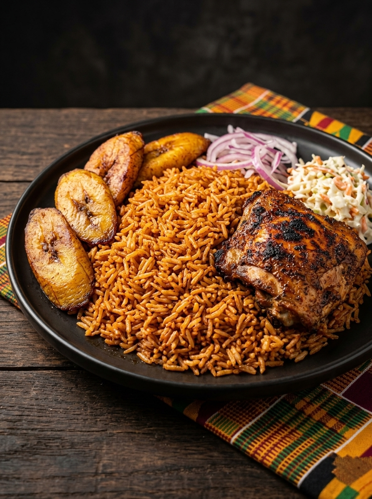

Nigerian Jollof Rice is a popular West African rice dish known for its rich tomato flavour, vibrant colour and distinctive seasoning. It is commonly enjoyed at family gatherings, celebrations and everyday meals.
What Makes Nigerian Jollof Rice Special?
The flavour of Jollof Rice comes from the combination of tomatoes, peppers, onions, seasoning and rice cooked together in a well-prepared sauce.
Its taste and texture depend on the quality of the ingredients, the preparation of the sauce and the cooking process.
Ingredients
The following is a suggested ingredient list. The restaurant should verify the quantities and recipe before this article is published as its official recipe.
- Rice
- Fresh tomatoes
- Red bell peppers
- Scotch bonnet peppers
- Onions
- Tomato paste
- Cooking oil
- Seasoning and salt
- Stock or water
- Spices of choice
How to Prepare Nigerian Jollof Rice
Step 1: Prepare the Pepper Mix
Wash the tomatoes, peppers and onions. Blend the ingredients into a smooth mixture suitable for preparing the Jollof sauce.
Step 2: Prepare the Sauce
Heat cooking oil in a pot and add chopped onions. Stir in the tomato paste, followed by the blended pepper mixture. Allow the sauce to cook while stirring occasionally.
Step 3: Add Seasoning and Stock
Add your chosen seasoning, spices and stock. Stir properly and allow the sauce to develop its flavour.
Step 4: Add the Rice
Add washed rice to the prepared sauce. Stir until the rice is evenly coated, then cover the pot and allow it to cook.
Step 5: Allow the Rice to Cook
Cook on controlled heat until the rice is tender and the liquid has been absorbed. Check periodically to prevent burning.
Step 6: Serve and Enjoy
Once properly cooked, serve your Jollof Rice with your preferred side dish or protein.
What Can You Eat With Jollof Rice?
Jollof Rice can be enjoyed with different accompaniments, including chicken, beef, fried plantain and vegetables. Your choice depends on your preference.
Craving Delicious Jollof Rice?
Explore the Nigerian Kitchen menu and discover meals prepared for your enjoyment.
Explore Our Menu